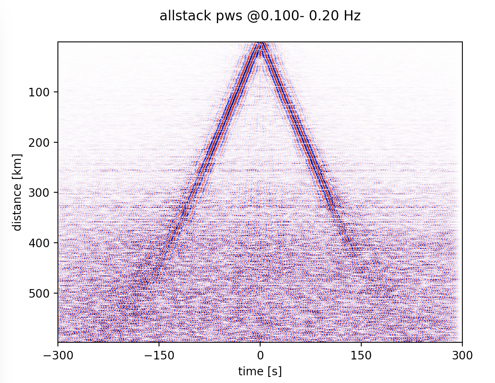
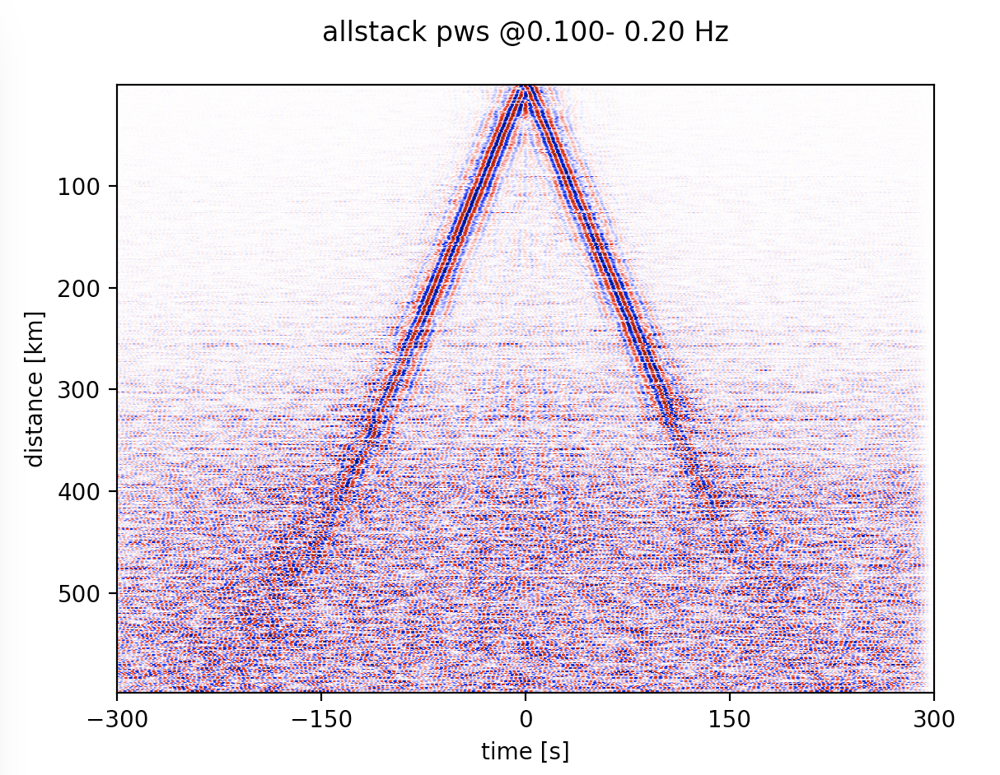

Tutorial¶
S0A. Downloading seismic noise data¶
The script of S0A_download_ASDF_MPI.py (located in src directory) and its existing parameters allows to download all available broadband CI stations (BH?) located in a certain region and operated during 1/Jul/2016-2/Jul/2016 through the SCEC data center. In the script, short summary is provided for all input parameters that can be changed according to the user’s needs. In the current form of the script, we set inc_hours=24 to download day-long continous noise data as well as the meta info and store them into a single ASDF file. To increase the signal-to-noise (SNR) of the final cross-correlation functions (see Seats et al.,2012 for more details), we break the day-long sequence into smaller segments, each of cc_len (s) long with some overlapping defined by step. You may wanto to set flag to be True if intermediate outputs/operational time is preferred during the downloading process. To run the code on a single core, open the terminal and activate the noisepy environment before run following command. (NOTE that things may go completely different if you want to run NoisePy on a cluster. Better check it out first!!)
$ python S0A_download_ASDF.py
If you want to use multiple cores (e.g, 4), run the script with the following command using mpi4py.
$ mpirun -n 4 python S0A_download_ASDF_MPI.py
The outputted files from S0A include ASDF files containing daily-long (24h) continous noise data, a parameter file recording all used parameters in the script of S0A and a CSV file of all station information (more details on reading the ASDF files with downloaded data can be found in docs/src/ASDF.md). The continous waveforms data stored in the ASDF file can be displayed using the plotting modules named as plotting_modules in the directory of src as shown below.
>>> import plotting_modules (cd to your source file directory first before loading this module)
>>> sfile = '/Users/chengxin/Documents/SCAL/RAW_DATA/2016_07_01_00_00_00T2016_07_02_00_00_00.h5'
>>> plotting_modules.plot_waveform(sfile,'CI','BLC',0.01,0.4)

Note
Please note that the script also offers the option to download data from an existing station list in a format same to the outputed CSV file. In this case, down_list should be set to True at L53. In reality, the downloading speed is dependent on many factors such as the original sampling rate of targeted data, the networks, the data center where it is hosted and the general structure you want to store on your machine etc. We tested a bunch of the parameters to evaluate their performance and the readers are referred to our paper for more details (Jiang et al., 2019).
S0B. Deal with local data¶
The script of S0B_to_ASDF.py is developed for the users to handle local data in any format that ObsPy can read stored on your own disk. Most of the variables are the same as those for S0A and thus should be pretty straighforward to follow and change. In this script, it preprocesses the data by merging, detrending, demeaning, downsampling, and then trimming before saving them into ASDF format for later NoisePy processing. In particular, we expect the script to deal with very messydata, by which we mean that, seismic data is broken into small pieces and of messy time info such as overlapping time. REMEMBER to set messydata at L62 to True when you have messy data! (Tutorials on removing instrument response)
S1. Perform cross correlations¶
S1_fft_cc_MPI.py is the core script of NoisePy, which performs Fourier transform to all noise data first and loads them into the memory before they are further cross-correlated. This means that we are performing cross-correlation in the frequency domain. In the script, we provide several options to calculate the cross correlation, including raw, coherency and deconv (see our paper for detailed definition). We choose coherency as an example here. After running the script, it will create a new folder named CCF, in which new ASDF files containing all cross-correlation functions between different station pairs are located. It also creates a parameter file of fft_cc_data.txt that records all useful parameters used in this script. Once you get the cross-correlation file, you can show the daily temporal variation between all station-pair by calling plot_substack_cc function in plotting_modules as follows.
>>> import plotting_modules
>>> sfile = '/Users/chengxin/Documents/SCAL/CCF/2016_07_01_00_00_00T2016_07_02_00_00_00.h5'
>>> plot_modules.plot_substack_cc(sfile,0.1,0.2,200,True,'/Users/chengxin/Documents/SCAL/CCF/figures')
{kind=link}

S2. Do stacking¶
The script of S2_stacking.py is used to assemble and/or stack all cross-correlation functions computed for the staion pairs in S1 and save them into ASDF files for future analysis (e.g., temporal variation and/or dispersion extraction). In particular, there are two options for the stacking process, including linear and phase weighted stacking (pws). In general, the pws produces waveforms with high SNR, and the snapshot below shows the waveform comparison from the two stacking methods. We use the folloing commend lines to make the move-out plot.
- NoisePy compiles a suite of stacking routines. Please cite appropriate manuscript when using them:
Phase-weighted stacking: Schimmel et al, 1997
Selective stack with amp threshold: NoisePy paper
Selective stack with a CC threshold: NoisePy paper
Time-frequency PWS (Zeng and Thurber 2016)
auto-covariance filter (Nakata et al, 2016)
Robust stack (Xiaotao - Pavlis & Vernon, 2010), Yang et al, 2020
Robust stacking with CC threshold, Yang et al, 2020
Nth-root stack (Rost and Thomas?)
Denoise with SVD+Wiener (Moreau et al, 2017)
>>> import plotting_modules,glob
>>> sfiles = glob.glob('/Users/chengxin/Documents/SCAL/STACK/*/*.h5')
>>> plot_modules.plot_all_moveout(sfiles,'Allstack_linear'0.1,0.2,'ZZ',1,300,True,'/Users/chengxin/Documents/SCAL/STACK') #(move-out for linear stacking)
>>> plot_modules.plot_all_moveout(sfiles,'Allstack_pws'0.1,0.2,'ZZ',1,300,True,'/Users/chengxin/Documents/SCAL/STACK') #(move-out for pws)
 

{kind=link}